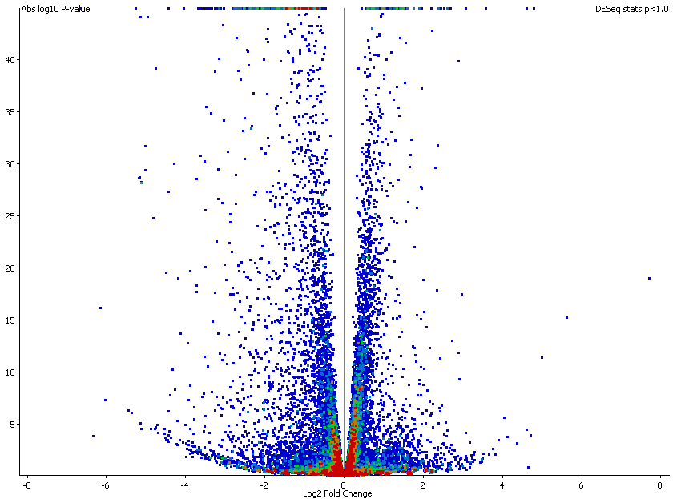

The volcano plot is a way to review the results of a statistical filter within seqmonk. It is a plot of the absolute difference seen in a test (on the x-axis) vs the abs(log10(pvalue)) on the y axis (so larger values are more significant).

The volcano plot does not use your data or quantitations - it solely relies on the annotations placed on a probe list by a previously run statistical filter. Not all filters will generate the necessary values needed for the plot, but if a filter includes a p-value (or FDR), and some measure of difference then you can select it in the Data view and launch the volcano plot.
Within the plot each probe will be plotted. You can mouse over probes to see what they are and you can double click on them to go to that probe in the chromosome view. Lines will appear across the plot at the locations of the 0.05 and 0.01 cutoffs.